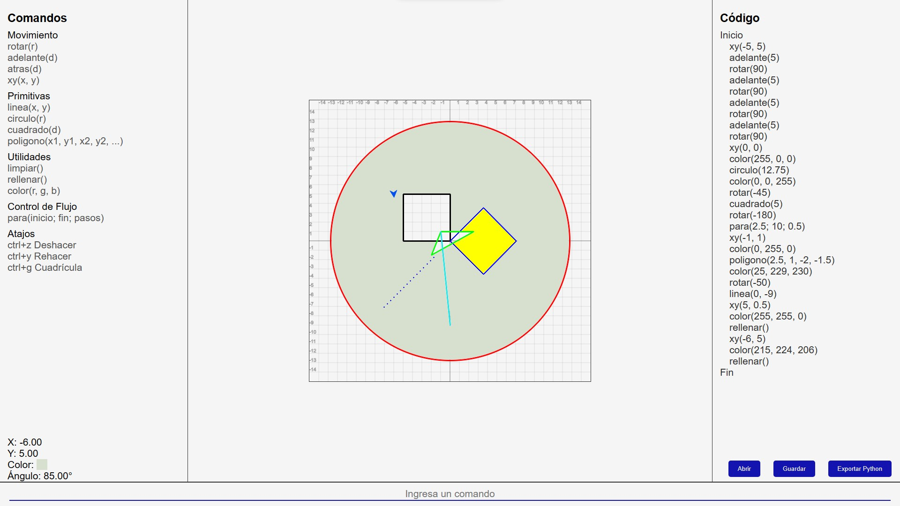

ThinkGeo
DESARROLLO DEL PENSAMIENTO ALGORÍTMICO CON GEOMETRÍA PLANA EN UN CS1
PROBLEMÁTICA
Desafío en la Enseñanza de Programación
- La enseñanza de programación en el CS1 es un desafío debido a la falta de habilidades esenciales en estudiantes novatos.
- Métodos de enseñanza inadecuados y complejidad cognitiva.
- Introducción de nuevos conceptos y falta de experiencia previa.
La Importancia del CS1
- El éxito en el CS1 influye en la formación de futuros programadores.
- Aprender a programar va más allá de la codificación.
- Cultivo del pensamiento crítico y habilidades de resolución de problemas.
Resultados de la Evaluación PISA 2015
- Colombia obtuvo resultados por debajo del promedio de la OECD en ciencias, matemáticas y resolución colaborativa de problemas en la evaluación PISA 2015.
- Esto subraya la importancia de abordar las dificultades en la educación desde un nivel temprano para garantizar una formación sólida en programación.
Pedagogía Innovadora
- Se requiere una pedagogía innovadora enfocada en el pensamiento algorítmico y la resolución de problemas para enfrentar los desafíos en la enseñanza de programación.
- Desarrollar habilidades cognitivas esenciales para preparar a futuros programadores frente a la industria del software en constante cambio.
Objetivos
Crear una herramienta que permita apoyar el desarrollo del pensamiento algorítmico utilizando geometría plana en un CS1.
Caracterizar los procesos de desarrollo del pensamiento
algorítmico en un CS1 mediante herramientas gráficas.
Construir un entorno gráfico que incorpore comandos de
primitivas de la geometría plana.
Determinar la incidencia del entorno gráfico en el desarrollo de
pensamiento algorítmico en un CS1.

Solucion
Este proyecto busca proporcionar un entorno grafico que sea web y así más personas puedan acceder a su uso al ser multiplataforma y con primitivas la geometría plana como apoyo al desarrollo del pensamiento algorítmico mejorar la interiorización del conocimiento.